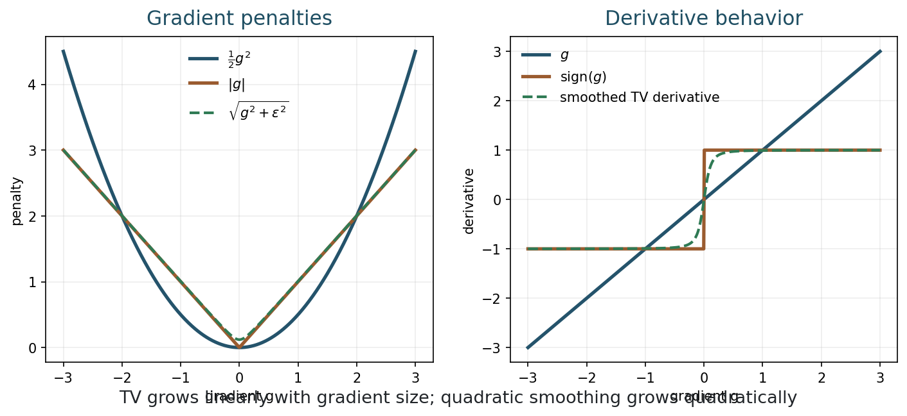
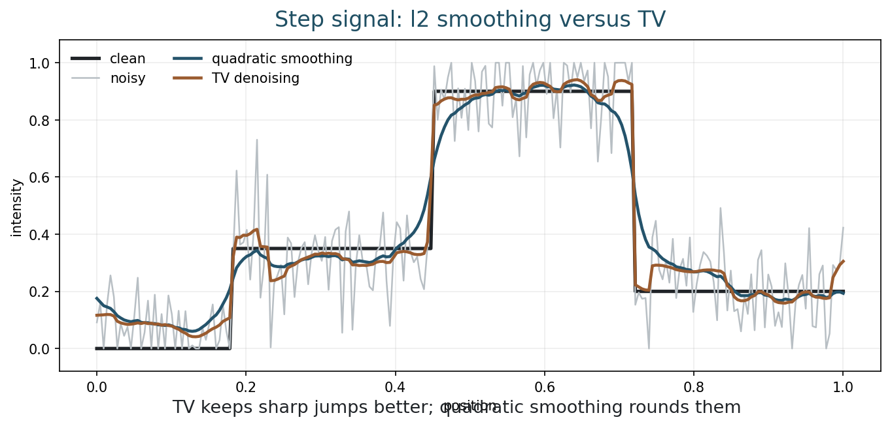
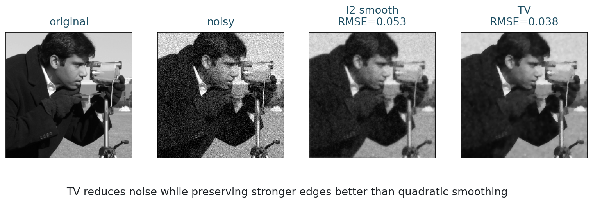
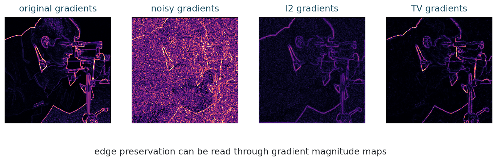
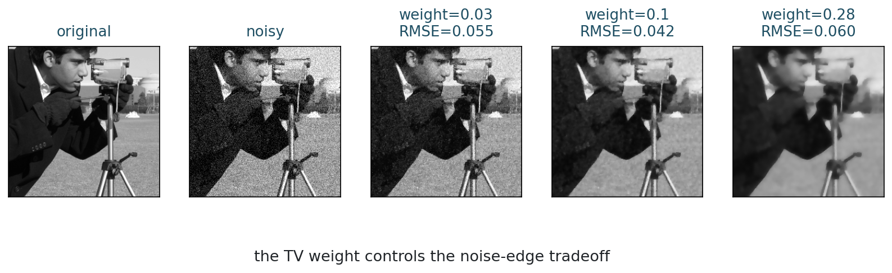
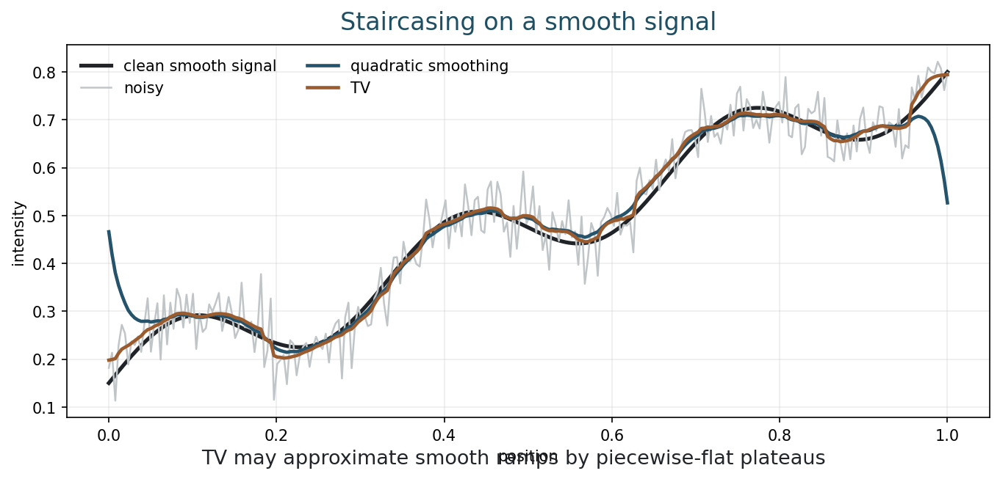

MATH 435: Mathematical Imaging - Week 8
2001-08-01
Edges are not noise
How can a regularizer remove noise without treating every edge as a mistake?
| Time | Work |
|---|---|
| 0-8 min | recap variational energy models |
| 8-22 min | TV definition and gradient penalties |
| 22-38 min | edge preservation in 1D |
| 38-52 min | image denoising: l2 versus TV |
| 52-62 min | staircasing and limitations |
| 62-69 min | notebook activity |
| 69-75 min | midterm/course checkpoint |
Week 7 used the quadratic smoothing energy:
E(u)=\frac12\|u-y\|_2^2+\frac{\lambda}{2}\|\nabla u\|_2^2.
What happens to true edges when we penalize large gradients quadratically?
Edges are large gradients.
Noise also creates large local changes.
Quadratic smoothness reduces both noise and edges.
A different smoothness prior
Penalize gradient magnitude
For a grayscale image u:\Omega\to\mathbb{R}:
\operatorname{TV}(u) = \int_\Omega |\nabla u(x)|\,dx.
TV measures the total amount of change in the image.
For a pixel grid:
\operatorname{TV}(u) = \sum_i \sqrt{(D_xu_i)^2+(D_yu_i)^2}.
D_x and D_y are finite differences in horizontal and vertical directions.
The classical Rudin-Osher-Fatemi model is:
u_\lambda = \operatorname*{argmin}_u \frac12\|u-y\|_2^2 + \lambda\,\operatorname{TV}(u).
Data fidelity keeps the image close to data; TV regularization controls total edge strength.

Quadratic penalty:
\frac12 g^2
TV penalty:
|g|.
Large gradients are much more expensive under \ell_2 than under TV.
5 minutes
Compare the cost of a gradient g=4:
Which penalty discourages a sharp edge more strongly?
The function |g| is not differentiable at g=0.
Why might this make optimization more delicate than quadratic smoothing?
Week 9 will discuss subgradients and proximal ideas.
Start with a signal
Jumps are allowed

TV counts the amount of change, not how spread out it is.
A sharp jump can be cheaper than a long gradual transition with many small changes.
5 minutes
Which image class does TV prefer?
Give a one-sentence reason.
Real image comparison
Noise versus edge preservation



In
\frac12\|u-y\|_2^2+\lambda\operatorname{TV}(u),
larger \lambda means:
5 minutes
For the parameter-effect figure, choose a TV weight.
Would you choose the same value for:
TV has a signature artifact
Piecewise-flat plateaus

TV favors sparse gradients.
That means many locations with zero gradient and a smaller number of jumps.
TV preserves edges, but it can turn smooth variation into plateaus.
| Property | l2 smoothing | TV |
|---|---|---|
| Noise removal | yes | yes |
| Edge preservation | weak | strong |
| Optimization | smooth linear problem | nonsmooth convex problem |
| Typical artifact | blur | staircasing |
| Best for | smooth images | piecewise-smooth or piecewise-constant images |
What prior did we choose?
Regularization is a modeling statement
TV regularization says:
Among images that fit the data, prefer images with small total variation.
This is a good prior when meaningful structures are separated by edges.
TV may struggle with:
Week 8 is also the midterm week in the syllabus.
From the repository root:
8 minutes
Open the Week 8 notebook.
For each phrase, choose l2 smoothing or TV:
Answer in one sentence each:
| Question | Short answer |
|---|---|
| TV | sum or integral of gradient magnitude |
| edge preservation | linear gradient penalty is less harsh on large jumps |
| staircasing | smooth variation becomes piecewise flat |
| optimization | TV is convex but nonsmooth |
Optimization methods:
MATH 435: Mathematical Imaging